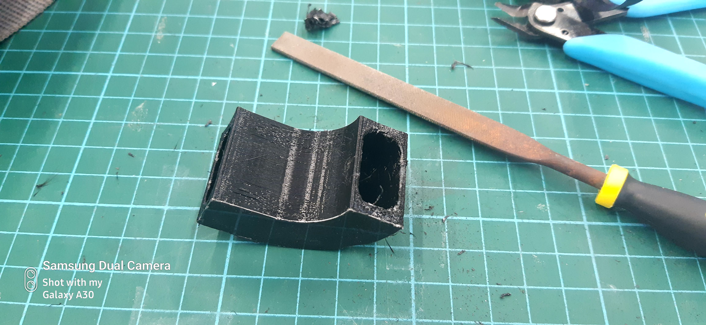

Introduction
With the final project, i decided to make a hydroponic planter that will control the humidity of the environment inside it, this project will utilise all the design and fabrication skills i have learnt prior to this, and will utilise
- 3D Printing
- Laser Cutting
- Arduino Microcontroller Programming (C++)
Conceiving the Idea
Before the project must be started , i first sketched out several designs that i wanted to build. After Discussing with the lecturer the feasability and parts selection for the project, the lecturer gave me the green light and i started designing
How It Works
The planter has an internal reservoir inside it that holds water to water the plant and also to provide the humidifier water to make mist. There is a DHT11 Temperature and humidity sensor that measures the humidity levels in the enclosure.The microcontroller uses the information and controls the fan and mister to turn on when the humidity is lesser than the set point.
3D design
I designed the model in Fusion 360 . I first designed the laser cut parts first. Followed by the 3D Printed parts. You can use your mouse and drag and interact with the window to check out the project.
DownloadThis is the whole assembly of the project , 3D printed parts are black in color while laser cut parts are brown in color
Components
Fan Duct
The Fan Duct's main purpose is to deliver the mist into the enclosure
Sensor Shroud
The sensor shroud holds the DHT11 Module for humidity monitoring of the enclosure
Edge Stay
The edge stay prevents the acrylic top enclosure from sliding off
Electronics Enclosure
This is where the electronics is housed in
Special Settings for 3D printing
As for 3D printing the settings that i used are
As for components like the Fanducts, it contains slots that are specially designed to have rounded corners, this allows of the printin gwithout of the supports
However, i needed to print supports just in case, due to how thin the components are. due to the internal slot, i used concentric supports that do not obstruct the entry and exit of the duct

the support structure does not obstruct the openings in the event where the support is difficult to remove
luckily due to the concentric support structure, it is easy to remove the supports
Disclaimer
The fan shroud and the hinge are found on thingiverse as i already have it 3d printed prior to the project and is just using to reduce printing time and design
https://www.thingiverse.com/thing:2187167
as for the fan shroud, since i printed it a log time go i couldnt find the source files for it.
Laser cutting
this is the part that i use for laser cutting the top enclosure is acrylic while the bottom is the plywood. After designing , i converted it to dxf files and proceeded to lasercut at the lab.
3D Printing
The 3d printed parts are printed with PLA with the ultimaker 2+ 3d Printer
Programming
For the arduino i programmed it in C++
this is the initialisation program where i determine the pins of the DHT11, as well as the input of the 2 relay
This is the part of the program where the arduino reads the humidity from the sensor itself and inserts these values into a variable
This is the part where it uses the variables and checks whether the humidity is below or above 60%,
using this , the arduino energises the relay notated by HIGH and LOW state
Download Program